Question:1
Draw a line AB and take a point P outside it. Draw a line CD parallel to AB and passing through the point P.
Solution:
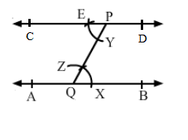
Question:2
Draw a line AB and draw another line CD parallel to AB at a distance of 3.5 cm from it.
Solution:
.png)
Question:3
Draw a line l and draw another line m parllel to l at a distance of 4.3 cm from it.
Solution:
.png)
Question:4
Construct a ∆ABC in which BC = 3.6 cm, AB = 5 cm and AC = 5.4 cm. Draw the perpendicular bisector of the side BC.
Solution:
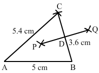
Question:5
Construct a ∆PQR in which QR = 6 cm, PQ = 4.4 cm and PR = 5.3 cm. Draw the bisector of ∠P.
Solution:
.png)
Question:6
Construct an equilateral triangle each of whose sides measures 6.2 cm. Measure each of its angles.
Solution:
When we will measure angles of triangle using protractor then we find that all angles are equal to 60
.png)
Question:7
Construct a ∆ABC in which AB = AC = 4.8 cm and BC = 5.3 cm. Measure ∠B and ∠C. Draw AD ⊥ BC.
Solution:
.png)
Question:8
Construct a ∆ABC in which AB = 3.8 cm, ∠A = 60° and AC = 5 cm.
Solution:
.png)
Question:9
Construct a ∆ABC in which BC = 4.3 cm, ∠C = 45° and AC = 6 cm.
Solution:
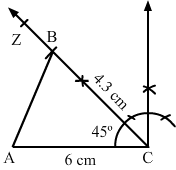
Question:10
Construct a ∆ABC in which AB = AC = 5.2 cm and ∠A = 120°. Draw AD ⊥ BC.
Solution:
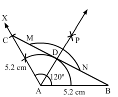
Question:11
Construct a ∆ABC in which BC = 6.2 cm, ∠B = 60° and ∠C = 45°.
Solution:
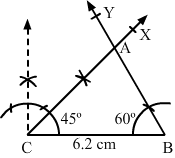
Question:12
Construct a ∆ABC in which BC = 5.8 cm, ∠B = ∠C = 30°. Measure AB and AC. What do you observe?
Solution:
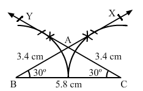
Question:13
Construct a ∆ABC in which AB = 7 cm, ∠A = 45° and ∠C = 75°.
Solution:
.png)
Question:14
Construct a ∆ABC in which BC = 4.8 cm, ∠C = 90° and AB = 6.3 cm.
Solution:
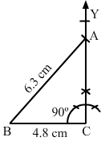
Question:15
Construct a right-angled triangle one side of which measures 3.5 cm and the length of whose hypotenuse is 6 cm.
Solution:
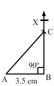
Question:16
Construct a right triangle having hypotenuse of length 5.6 cm and one of whose acute angles measures 30°.
Solution:
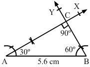
Question:17
Mark (✓) against the correct answer
The supplement of 45° is
(a) 45°
(b) 75°
(c) 135°
(d) 155°
Solution:
Question:18
Mark (✓) against the correct answer
The complement of 80° is
(a) 100°
(b) 10°
(c) 20°
(d) 280°
Solution:
Question:19
Mark (✓) against the correct answer
An angle is its own complement. The measure of the angle is
(a) 30°
(b) 45°
(c) 90°
(d) 60°
Solution:
Question:20
Mark (✓) against the correct answer
An angle is one-fifth of its supplement. The measure of the angle is
(a) 30°
(b) 15°
(c) 75°
(d) 150°
Solution:
Question:21
Mark (✓) against the correct answer
An angle is 24° more than its complement. The measure of the angle is
(a) 47°
(b) 57°
(c) 53°
(d) 66°
Solution:
Question:22
Mark (✓) against the correct answer
An angle is 32° less than its supplement. The measure of the angle is
(a) 37°
(b) 74°
(c) 148°
(d) none of these
Solution:
Question:23
Mark (✓) against the correct answer
Two supplementary angles are in the ratio 3 : 2. The smaller angle measures
(a) 108°
(b) 81°
(c) 72°
(d) none of these
Solution:
Question:24
Mark (✓) against the correct answer
In the given figure, AOB is a straight line and the ray OC stands on it.
If ∠BOC = 132°, then ∠AOC = ?
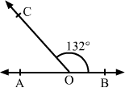
(a) 68°
(b) 48°
(c) 42°
(d) none of these
Solution:
Question:25
Mark (✓) against the correct answer
In the given figure,
AOB is a straight line, ∠
AOC = 68° and ∠
BOC =
x°.
The value of
x is
.png)
(a) 32
(b) 22
(c) 112
(d) 132
Solution:
Question:26
Mark (✓) against the correct answer
In the adjoining figure, what value of x will make AOB a straight line?
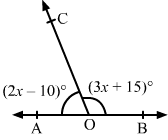
(a) x = 30
(b) x = 35
(c) x = 25
(d) x = 40
Solution:
Question:27
Mark (✓) against the correct answer
In the given figure, what value of x will make AOB a straight line?
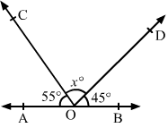
(a) x = 50
(b) x = 100
(c) x = 60
(d) x = 80
Solution:
Question:28
Mark (✓) against the correct answer
In the given figure, it is given that AOB is a straight line and 4x = 5y.
What is the value of x?
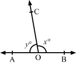
(a) 100
(b) 105
(c) 110
(d) 115
Solution:
Question:29
Mark (✓) against the correct answer
In the given figure, two straight lines AB and CD intersect at a point O and ∠AOC = 50°. Then, ∠BOD = ?
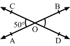
(a) 40°
(b) 50°
(c) 130°
(d) 60°
Solution:
Question:30
Mark (✓) against the correct answer
In the given figure,
AOB is a straignt line, ∠
AOC = (13
x − 8)°, ∠
COD = 50° and ∠
BOD = (
x + 10)°. The value of
x is
.png)
(a)
32
(b) 42
(c) 36
(d) 52
Solution:
Question:31
Mark (✓) against the correct answer
In ∆
ABC, side
BC has been produced to
D. If ∠
ACD = 132° and ∠
A = 54°, then ∠
B = ?
.png)
(a)
48°
(b) 78°
(c) 68°
(d) 58°
Solution:
Question:32
Mark (✓) against the correct answer
In ∆
ABC, side
BC has been produced to
D. If ∠
BAC = 45° and ∠
ABC = 55°, then ∠
ACD = ?
.png)
(a)
80°
(b) 90°
(c) 100°
(d) 110°
Solution:
Question:33
Mark (✓) against the correct answer
In the given figure, side
BC of ∆
ABC is produced to
D such that ∠
ABC = 70° and ∠
ACD = 120°. Then, ∠
BAC = ?
.png)
(a)
60°
(b) 50°
(c) 70°
(d) 35°
Solution:
Question:34
Mark (✓) against the correct answer
In the given figure, rays OA, OB, OC and OD are such that ∠AOB = 50°, ∠BOC = 90°, ∠COD = 70° and ∠AOD = x°.
Then, the value of x is
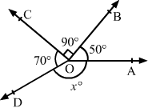
(a) 50°
(b) 70°
(c) 150°
(d) 90°
Solution:
Question:35
Mark (✓) against the correct answer
In the given figure, ∠A = 50°, CE || BA and ∠ECD = 60°
Then, ∠ACB = ?
.png)
(a) 50°
(b) 60°
(c) 70°
(d) 80°
Solution:
Question:36
Mark (✓) against the correct answer
In ∆ABC, if ∠A = 65° and ∠C = 85°, then ∠B = ?
(a) 25°
(b) 30°
(c) 35°
(d) 40°
Solution:
Question:37
Mark (✓) against the correct answer
The sum of all angles of a triangle is
(a) 90°
(b) 100°
(c) 150°
(d) 180°
Solution:
Question:38
Mark (✓) against the correct answer
The sum of all angles of a quadrilateral is
(a) 180°
(b) 270°
(c) 360°
(d) 480°
Solution:
Question:39
Mark (✓) against the correct answer
In the given figure, AB || CD. ∠OAB = 150° and ∠OCD = 120°.
Then ∠AOC = ?
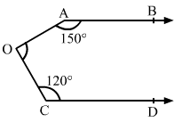
(a) 80°
(b) 90°
(c) 70°
(d) 100°
Solution:
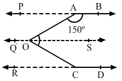
Question:40
Mark (✓) against the correct answer
In the given figure, PQ || RS. ∠PAB = 60° and ∠ACS = 100°.
Then ∠BAC = ?
.png)
(a) 40°
(b) 60°
(c) 80°
(d) 50°
Solution:
Question:41
Mark (✓) against the correct answer
In the given figure, AB || CD || EF, ∠ABG = 110°, ∠GCD = 100° and ∠BGC = x°.
Then x = ?
.png)
(a) 35
(b) 50
(c) 30
(d) 40
Solution:
Question:42
The sum of any two sides of a triangle is always
(a) equal to the third side
(b) less than the third side
(c) greater than or equal to the 3rd side
(d) greater than the 3rd side
Solution:
Question:43
The diagonals of a rhombus
(a) are always equal
(b) never bisect each other
(c) always bisect each other at an acute angle
(d) always bisect each other at right angles
Solution:
Question:44
Mark (✓) against the correct answer
In ∆ABC, ∠B = 90°, AB = 5 cm and AC = 13 cm. Then, BC = ?
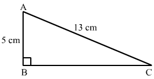
(a) 8 cm
(b) 18 cm
(c) 12 cm
(d) none of these
Solution:
Question:45
Mark (✓) against the correct answer
In a ∆ABC, it is given that ∠B = 37°, and ∠C = 29°. Then, ∠A = ?
(a) 86°
(b) 66°
(c) 114°
(d) 57°
Solution:
Question:46
Mark (✓) against the correct answer
The angles of a triangle are in the ratio 2 : 3 : 7. The measure of the largest angle is
(a) 84°
(b) 98°
(c) 105°
(d) 91°
Solution:
Question:47
Mark (✓) against the correct answer
In a ∆ABC, if 2∠A = 3∠B = 6∠C, then ∠B = ?
(a) 30°
(b) 90°
(c) 60°
(d) 45°
Solution:
Question:48
Mark (✓) against the correct answer
In a ∆ABC, if ∠A + ∠B = 65° and ∠B +∠C = 140°. Then, = ∠B?
(a) 25°
(b) 35°
(c) 40°
(d) 45°
Solution:
Question:49
Mark (✓) against the correct answer
In a ∆ABC, ∠A − ∠B = 33° and ∠B −∠C = 18°. Then, = ∠B?
(a) 35°
(b) 55°
(c) 45°
(d) 57°
Solution:
Question:50
Mark (✓) against the correct answer
The angles of a triangle are (3x)° ,(2x − 7)° and (4x − 11)°. Then, x = ?
(a) 18
(b) 20
(c) 22
(d) 30
Solution:
Question:51
Mark (✓) against the correct answer
∆ABC is right-angled at A. If AB = 24 cm and AC = 7 cm then BC = ?
(a) 31 cm
(b) 17 cm
(c) 25 cm
(d) 28 cm
Solution:
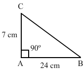
Question:52
Mark (✓) against the correct answer
A ladder is placed in such a way that its foot is 15 m away from the wall and its top reaches a window 20 m above the ground. The length of the ladder is
(a) 35 m
(b) 25 m
(c) 18 m
(d) 17.5 m
Solution:
.png)
Question:53
Mark (✓) against the correct answer
Two poles of heights 6 m and 11 m stand vertically on a plane ground. If the distance between their feet is 12 m, what is the distance between their tops?
(a) 13 m
(b) 14 m
(c) 15 m
(d) 12.8 m
Solution:
Question:54
Mark (✓) against the correct answer
∆ABC is an isosceles triangle with ∠C = 90° and AC = 5 cm. Then, AB = ?
(a) 2.5 cm
(b) 5 cm
(c) 10 cm
(d)
Solution:
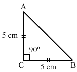
Question:55
In the given figure, AB || CD, ∠ABO = 60° and ∠CDO = 40°. Then, find ∠BOD.
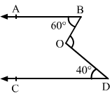
Solution:
.png)
Question:56
In the given figure,
CE ||
BA. If ∠
BAC = 70° and ∠
ECD = 50°, find ∠
ACB.
.png)
Solution:
Question:57
In the given figure, two straight lines
AB and
CD intersect at a point
O such that ∠
AOC = 50°.
Find: (i) ∠
BOD (ii) ∠
BOC.
.png)
Solution:
Question:58
In the given figure, AOB is a straight line and OC is ray such that∠AOC = (3x + 20)° and ∠BOC = (2x − 10)°. Find the value of x and hence find (i) ∠AOC and ∠BOC.
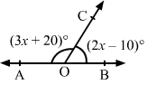
Solution:
Question:59
In a ∆ABC, If ∠A = 65°, ∠B = 45°, find ∠C.
Figure
Solution:
Question:60
In the given figure, x : y = 2 : 3 and ∠ACD = 120°. Find the values of x,y and z.
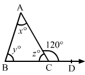
Solution:
Question:61
Two legs of a right triangle are 8 cm and 15 cm long. Find the length of the hypotenuse of the triangle.
Solution:
Question:62
In the adjoining figure, ABC is a triangle in which AD is the bisector of ∠A. If AD ⊥ BC, show that ∆ABC is isosceles.
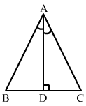
Solution:
Question:63
Construct a ∆ABC in which BC = 5.3 cm, ∠B = 60° and AB = 4.2 cm. Also, draw the perpendicular bisector of AC.
Solution:
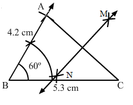
Question:64
Mark (✓) against the correct answer
The supplement of 35° is
(a) 55°
(b) 65°
(c) 145°
(d) 165°
Solution:
Question:65
Mark (✓) against the correct answer
In the given figure, AOB is a straignt line, ∠AOC = 56° and ∠BOC = x°. The value of x is
(a) 34
(b) 44
(c) 144
(d) 124
Solution:
Question:66
Mark (✓) against the correct answer
In ∆ABC, side BC has been produced to D such that ∠ACD = 125° and ∠BAC = 60°. Then ∠ABC = ?
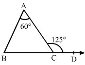
(a) 55°
(b) 60°
(c) 65°
(d) 70°
Solution:
Question:67
Mark (✓) against the correct answer
In a ∆ABC, If ∠B = 40° and ∠C = 35°, then ∠A = ?
(a) 50°
(b) 55°
(c) 105°
(d) 150°
Solution:
Question:68
Mark (✓) against the correct answer
In a ∆ABC, If 2∠A = 3∠B = 6∠C, then ∠B = ?
(a) 30°
(b) 45°
(c) 60°
(d) 90°
Solution:
Question:69
Mark (✓) against the correct answer
In a ∆ABC, If A − B = 33° and B − C = 18°, then ∠B = ?
(a) 35°
(b) 55°
(c) 45°
(d) 57°
Solution:
Question:70
Mark (✓) against the correct answer
∆ABC is an isosceles right triangle in which ∠A = 90° and BC = 6 cm. Then AB = ?
(a)
(b)
(c)
(d)
Solution:
Question:71
Fill in the blanks.
(i) The sum of the angles of a triangle is ...... .
(ii) The sum of any two sides of a triangle is always ...... than the third side.
(iii) In ∆ABC, if ∠A = 90°, then BC2 = (......) + (......).
(iv) In ∆ABC, AB = AC and AD ⊥ BC, then BD = ...... .
(v) In the given figure, side BC of ∆ABC is produced to D and CE || BA. If ∠BAC = 50°
then ∠ACE = ...... .
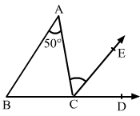
Solution:
(i) The sum of the angles of a triangle is 180°.
(ii) The sum of any two sides of a triangle is always greater than the third side.
(iii) In ∆ABC, if ∠A = 90°, then:
BC2 = (AB2) + (BC2)
(iv) In ∆ABC:
AB = AC
AD ⊥ BC
Then, BD = DC
(v) In the given figure, side BC of ∆ABC is produced to D and CE || BA.
If ∠BAC = 50°, then ∠ACE = 50°.
Question:72
Write 'T' for true and 'F' for false
(i) If two parallel lines are cut by a transversal, then the alternate interior angles are equal.
(ii) If two lines intersect each other, then the vertically opposite angles are equal.
(iii) Each acute angle of an isosceles right triangle measures 60°.
(iv) A right triangle cannot have an obtuse angle.
Solution: